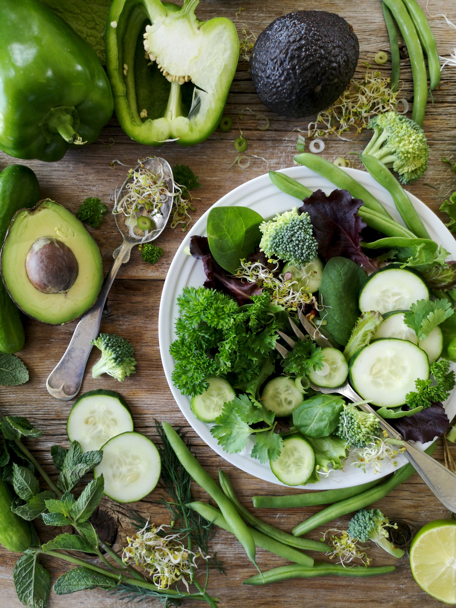

How to Eat in an Environmentally Friendly Way
Small changes can make a big difference. Eating green is not about eating cabbage, kale or lettuce, but about how we can be environmentally friendly whilst we still eat the foods we love, in a green and healthy way. Here we have a look at different options to make more changes in a combined shop green guide, and an eat green guide.
From local spade to local fork
The easiest way to be environmentally friendly when it comes to what you eat is to buy food grown locally. This means that you can focus on eating foods that are in season, which saves on transport costs as foods are not flown in from overseas. Sourcing local foods is not only very environmentally friendly, but the food is fresher and tastes better as it has not been sitting in crates awaiting transport. And there is less fuel used in getting the food form the spade to your fork. Whilst not all foods can be eaten raw, save energy and eat raw foods such as salads.
Waste not want not
Food waste is not only ecologically unsound, but it is also a waste of money. Every year thousands of tonnes of food ends up in a landfill. Create a meal plan each week, so you only buy what you need. If you see special offers, alter your meal plan or batch cook and keep extra food in the freezer. Any shop green guide will also suggest that to be environmentally friendly, food should have minimal packaging, the bags should be reused, and everything that can be recycled should be taken to a facility where this can happen.
Grow your own
A simple green guide suggests starting to grow a small plot of vegetables in your garden, sign up for a local allotment or join a community allotment site where everyone shares the planting, nurturing, weeding and eventual produce. Growing your own food means that you know exactly what is being added to the soil to help it grow. It also reduces food miles, packaging and harmful pesticides and fertilisers that can leach into the water systems. Add potted herbs on your kitchen windowsill for extra flavourings and enjoy the fresh taste of your own food.
Eat less meat
Meat that has been industrially farmed has a significant impact on the environment, particular beef and pork, where farmed meat is grossly inefficient. The need for deforestation to create pasture for livestock, along with methane emissions from cows and fertiliser use, creates as much greenhouse gas emissions as all the world’s cars, trucks and aeroplanes according to scientists. Meat rearing practices also risk the mass extinctions of other animals, as well as spawn significant pollution of waterways and finally, the ocean. Check where the farm animals have been bred. Many farmers include antibiotics and hormones with the animal feed. These chemicals are not good for the animals or the environment, as these additional chemicals are not needed. Read about the other interesting suggestions about living eco.
Eating out
You can still make environmentally friendly choices when you go out to eat. Do not choose endangered fish from the menu. Order organic dairy products and hormone-free meat to encourage the restaurant to continue offering these options whilst also keeping groundwater safe for everyone. Check that the restaurant purchases its products from locally-owned markets or other sustainable sources. Your interest may encourage them to investigate this further.
Dealing with food left over
Turn food scraps like vegetable peelings into compost for your garden or offer them to someone who is making compost. Seal any leftover food in an airtight container and keep for another meal, either the same or cooked up into another meal, like a curry.
Shopping for food
A shop green guide for your groceries will always suggest choosing to produce and products with minimal packaging and to carry out your goods in cloth bags, using as little plastic as possible and ideally none at all. In this way, you can enjoy your meal knowing that you have done all you can to be environmentally friendly. If you are not sure what types of food are eco-friendly check our best eco-friendly foods advices.